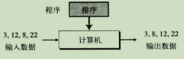

计算机科学导论–学习笔记(包含计算机科学导论书籍)
Lesson1 绪论
NO1.1 图灵模型
根据图灵模型所得的通用图灵机是对现代计算机的首次描述。
- 阿兰·图灵在1937年首次提出了一个通用计算设备的设想，他设想所有的计算都可能在一种特殊的机器上执行，这就是现在所说的图灵机。
- 图灵模型，该模型是在图灵机思想的基础上，演变而来的模型，它更适用于通用计算机，因为图灵模型添加了一个额外的元素到计算机中，这就是程序。
- 简单讲，程序是一个有序的指令集合，作用是告诉计算机怎么对数据进行处理。

NO1.2 冯·诺依曼模型
基于图灵机的思想，冯·诺依曼在1944~1945年期间指出了：鉴于程序和数据在逻辑上是相同的，因此程序也能存储在计算机的存储器中——这就是冯诺依曼模型。
- 基于冯·诺依曼模型建造的计算机有四个模块：
- 存储器，用来存储数据和程序的模块；
- 算数逻辑单元(ALU，即运算器)，用来进行计算和逻辑运算的模块；
- 控制单元(即控制器)，顾名思义，就是对存储器、算术逻辑单元、以及输入/输出设备进行控制的模块；
- 输入/输出单元(即输入/输出设备)，就是接收计算机外部的数据和程序，并将计算机的处理结果输出到外部的模块。
- 存储程序的概念：程序由指令组成，并和数据一起存放在存储器中，计算机启动后，能自动地按照程序指令的逻辑顺序逐条把指令从存储器中读出来，并且完成由程序所描述的处理工作；冯·诺依曼模型指出，程序必须存储在存储器中。
NO1.3 计算机的组成
计算机由两大部分组成，即计算机硬件和计算机软件(包括了数据)。软件工程指的是结构化程序的设计和编写。
NO1.4 计算机的发展历史
计算机的发展历史，说白了就是计算机硬件的发展历史。
- 计算机的发展历程，主要分为了以下几个阶段：
- 机械计算机器(1930年以前)，该阶段，人们发明了一些用来进行计算的机器，但是它们与计算机的现代概念几乎没有什么关系；
- 电子计算机的诞生(1930~1950年)，在这个阶段里，电子计算机工业先驱的科学家们发明了一些计算机。如，1939年发明的第一台计算机，名为阿塔纳索夫-贝瑞计算机(又称ABC)、同时期被发明的还有德国的“Z1”、1946年诞生了著名的“ENIAC”、第一台基于冯氏思想(即存储程序思想)而诞生的计算机“EDVAC”等等；
- 计算机的诞生(1950年至今)，1950年以后出现的计算机差不多都基于冯·诺依曼模型。
Lesson2 数字系统
NO2.1 数字系统的理解
数字系统，简单理解就是，在不同的系统中，数字表示的方法是不一样的。如，数字5，在十进制中就是5，在中文中是“五”，在罗马数字系统中是“V”，这三个符号表示的都是5，只不过符号不一样。数字系统又分为位置化数字系统和非位置化数字系统。
NO2.2 位置化数字系统
所谓的位置化数字系统，指的是数字中符号所占据的位置决定了其表示的值。如，一个数字符号3，出现在不同的位置表示的意思也不同，如，个位(3)，十位(30)，百位(300)，千位(3000)等等。在位置化数字系统的眼里，任何的数字，采用任何的进制，都可以用一条公式概括出来，如下图所示：
说明：这条公式中字母S旁边的k-1….2、1、0、-1、-2、-3….-l表示的是数字所在位置。
说明：这是这个数字要表达的值的计算方式，其中b的零次方、一次方….通俗的讲，就是这个数字在这个位置所要表示的大小，而b表示这个数字是多少进制。
说明：十进制数789，用这个公式的表达。
- 常见的位置化数字系统包括：
- 十进制系统，简单的讲就是用0~9这十个符号来表示数字的系统，而十进制系统的规则是“逢十进一”。生活中我们用的数字就是十进制系统的数字。如，9+1，这里已经满十了，根据规则“逢十进一”，所以就需要往前进一位，且9后面没有别的数字，就只能重新回到0，所以9变成0，又因为往前进了一位，所以结果就是10。其实我们常用的数字，正确的表示应该为：正负号(数值)₁₀，只是我们把符号、括号、以及底都省略了，但并不是真的都消失了；
- 二进制系统，就是使用0和1这两个符号来表示数字的系统，规则是“逢二进一”；
- 十六进制系统，是指用0到9和(10)A、(11)B、(12)C、(13)D、(14)E、(15)F，这十六个符号来表示数字的系统，规则是“逢十六进一”；
- 八进制系统，用数字0到7这八个符号来表示数字的系统，规则是“逢八进一”。
说明：这是正数224的表示。
说明：这是小数24.13的表示。
拓展：基数和位权(其实就是上面所说的位置化数字系统)
一、基数，其实指的就是，在不同进制数中，进制是多少，那么它的基数就是多少；如二进制的基数就是2，八进制的基数就是8，同理十进制的基数是10，十六进制的基数就是16等等；
二、权值，简单理解就是幂，而幂的值是根据当前目标值的所在位数减1，即n-1；如，二进制101，基数是2，权值分别是12^2、02^1、12^0，百位上的1，从右往左数，是第三位，所以它的权值就是3-1=2，十位上的0的权值就是2-1=1，以此类推；
三、位权，其实就是指以进制基数为底的幂，简单理解就是，二进制的位权就是以2为底的幂，同理十六进制的位权则是以16为底的幂，其他进制也是同理。
说明：这是与十进制数25等值的二进制数11001。
说明：这是与十进制数5.75等值的二进制数101.11。
说明：这是与十进制数686等值的十六进制数2AE。
说明：这是与十进制数686等值的八进制数1256。
十进制与其他进制的相互转换。
其他进制到十进制的转换，在上面的介绍中，其实已经讲了，即：每一位上的数值x进制^权值^。如，八进制的1256，转换为十进制：1x8^3^+2x8^2^+5x8^1^+6x8^0^ = 686；注意：小数点左边的权值从0开始递增，如，1、2、3、4…依次递增，而小数点右边的位置量则是从-1开始递减，如，-1、-2、-3、-4….依次递减。
十进制到其他进制的转换，分为两部分：
- 整数部分的规则：十进制数/对应的进制，直到商为0，然后余数取反即可；
- 小数部分的规则：十进制小数对应的进制，然后取整数部分，直到小数部分为0或达到足够的位数时结束即可。
说明：十进制35转二进制。
说明：十进制小数0.625转二进制，即0.101。
- 二进制转八进制或十六进制，采用的方法很相似，二进制转八进制用的三位归纳法，二进制转十六进制用的四位归纳。
说明：图示是八进制转十六进制的方法。
NO2.3 非位置化数字系统
非位置化数字系统，指的是，使用有限的数字符号，且每个符号有一个值，这个值不会因为符号所处的位置改变而改变，简单讲就是，这个符号是什么值，在哪个位置都是这个值。如，罗马数字就是一个例子。
Lesson3 数据存储
NO3.1 计算机内部的数据
所有计算机外部的数据，要转换为二进制数据后才存入计算机，当数据从计算机输出时，再还原回来。
- 位(bit)是存储在计算机中的最小单位，它是0或1，换句话说，存入计算机的数据，都会转换为0或1来表示。
- 二进制表示的数字串有8位的话，被称为1字节(Byte)，所以1 Byte = 8 bit，意思就是1个字节有8位。
NO3.2 存储数字
计算机使用定点和浮点来表示整数和小数。
- 内存中存储整数使用的是定点表示法；整数中既有正整数、负整数、0，所以可以用以下几种方式来表示：
- 无符号表示法，用于无符号整数(就是没有符号的整数)，范围是0到无穷大之间；但是计算机肯定是无法表示无穷大这个整数的，所以就定义了一个最大无符号整数，值为
 ，这里的n代表计算机中分配用于表示无符号整数的二进制位数；
，这里的n代表计算机中分配用于表示无符号整数的二进制位数； - 符号加绝对值表示法，即计算机分配的二进制的位数中，最高位(就是最左边的位置)必须是符号位，且0表示正，1表示负；范围是-(2^n-1^-1)至+(2^n-1^-1)；
- 二进制补码表示法，即用二进制的补码来存储有符号整数；简单理解就是，通过一个数的二进制，分别得到原码(就是二进制)、反码、补码，最后用补码的形式来进行存储这个数；注意：正数的原反补都是一样的；而负数的反码要在原码的基础上，逐位取反，符号位不变；负数的补码要在反码的基础上，末位加1。
- 无符号表示法，用于无符号整数(就是没有符号的整数)，范围是0到无穷大之间；但是计算机肯定是无法表示无穷大这个整数的，所以就定义了一个最大无符号整数，值为
例如：
说明：存储7到八位的存储单元中：先将7转换为二进制数，得到的二进制数为111，但是不足八位，所以在左边添0，变成00000111，这样就满八位了。
说明：存储258到十六位的存储单元中：将258转为二进制数后得到100000010，还差七位才够十六位，所以往左边添0，直到满16位即可。
说明：存储11到四位的存储单元中，又试图再加上9：首先存储11到四位的存储单元中，11转换为二进制为1011，原本这没有什么问题，但是如果11+9=20，那么就会造成值溢出的情况，因为20转为二进制为10100，五位，无法全部存储到四位的存储单元中去，所以计算机丢掉第五位，也就是最前面的1，最后存储的则是0100，值就是4了。

说明：将-28存储到8位的存储单元中：先将28转为二进制，值为00011100，用符号加绝对值表示法，最左边的位置不应该用0，而是要用1，因为存储的是-28，而不是28，所以最后的存储的二进制的值为10011100。
- 存储小数使用的则是浮点表示法；浮点表示法表示的数都由三部分组成：符号(即正负号)、指数(进制数的幂)、尾数(小数点右边的数)；且十进制中的浮点表示法，我们很熟悉，就是科学计数法，而二进制中就叫做浮点表示法；注意：浮点表示法中，小数点左边必须是非零，这称为规范化。
- 科学计数法(用于十进制)；
- 浮点表示法(用于二进制)。
- IEEE(电子和电子工程师协会)定义了多种存储浮点数的标准，常用的是单精度、双精度。
- 单精度(32位)，即采用32位二进制来表示一个浮点数；
- 双精度(64位)，即采用64位二进制来存储一个浮点数。
例如：
说明：十进制5.75的单精度表示法。
说明：十进制数-0.0234375的单精度表示法。
说明：将单精度表示的11001010000000000111000100001111转换为十进制。
NO3.3 存储文本
字符是各种文字和符号的总称，而字符集则是多个字符的集合；我们使用字符集来存储文本数据。
- 常见的主流字符集有：
- ASCII字符集，用7位的二进制来表示128种不同的符号；
- Unicode字符集，用32位的二进制来表示4294967296种不同的符号，收集了来自全球不同的语言符号。
NO3.4 存储音频
音频表示声音或者音乐。
- 我们说存储音频，实际存储的是这个音频信号的密度。通过以下几个步骤可以获取音频信号的密度：
- 采样：即从无穷个点里，选取一部分点，但每个点仍然有无穷的信息。每秒钟40000个样本的采样率对音频信号来说是足够好的；
- 量化：将样本的值，截取为最接近的整数值的一种过程。如，实际值为17.2，可截取为17、实际值为17.7，则截取为18；
- 编码，将量化后的样本值，转为二进制。也就是将获取到的样本，每个样本都转化为n位的二进制来表示；当今主流的音频编码是MP3(MPEG Layer 3的简写，取44100个样本，且每个样本用16位来表示)，这是一种有损的音乐格式。
NO3.5 存储图像
图像又该使用什么方式存储呢。
- 存储在计算机中的图像使用两种不同的技术：光栅图和矢量图；将图像转化为二进制进行存储，就是视频了；
- 光栅图，用于存储模拟图像，即一个图像由模拟数据组成，数据密度随空间的变化而变化，这时候的采样称为扫描，样本称为像素；整个图像被分为小的像素，每个像素假定都有单独的密度值；
- 矢量图，使用几何图形来组合图像，而这些几何图形又用数学公式来表达，所以说矢量图是由定义如何绘制这些形状的一系列命令构成的。
Lesson4 数据运算
NO4.1 逻辑运算
这里的逻辑运算是指二进制的逻辑运算。
- 二进制的逻辑运算有如下几种：
- 与(AND)：两个二进制补码做与运算，位对齐，只要两位上的任意一位是0，那么与的结果就为0；
- 或(OR)：两个二进制补码做或运算，位对齐，只要两位上的任意一位是1，那么或的结果就为1；
- 异或(XOR)：两个二进制补码做异或运算，位对齐，只要两位上的数字都相同，则结果为0，不相同则为1；
- 非(NOT)：一个二进制补码做非运算，按位取反，如果位上是0，则非运算结果为1，如果位上是1，结果则为0。
例如：
//与运算
1 1 0 0
1 0 1 0
-----------------------
1 0 0 0
//或运算
1 1 0 0
1 0 1 0
-----------------------
1 1 1 0
//异或运算
1 1 0 0
1 0 1 0
-----------------------
0 1 1 0
//非运算
1 0
------------------------
0 1
NO4.2 移位运算
所谓的移位运算，简单理解就是将二进制进行左移或者右移。移位运算分为两种，逻辑移位运算和算数移位运算：
- 逻辑移位运算中，又分为逻辑移位、循环移位；
- 逻辑移位，简单的理解就是将二进制向左移(不够的部分就添加)或者向右移(多出的部分会被丢弃)；
- 循环移位，原理和逻辑移位差不多，只不过移位过程中，不会添加或丢弃二进制位，而是循环使用。
例如：
说明：逻辑左移，左边多的部分丢弃，右边少的部分添0。
0 0 0 1 0 0 1 0 原始的二进制补码
------------------------------------
0 0 1 0 0 1 0 0 逻辑左移之后的二进制补码
说明：逻辑右移，左边少的部分添0，右边多的部分丢弃。
0 0 0 1 0 0 1 0 原始的二进制补码
------------------------------------
0 0 0 0 1 0 0 1 逻辑右移之后的二进制补码
说明：循环左移，左边多的部分会循环到右边少的部分，意思就是左边多出来的，刚好给右边少的。
1 0 0 1 0 0 1 0 原始的二进制补码
------------------------------------
0 0 1 0 0 1 0 1 循环左移之后的二进制补码
说明：循环右移，右边多的部分会循环到左边少的部分，意思就是右边多出来的，刚好给左边少的。
0 0 0 1 0 0 1 1 原始的二进制补码
------------------------------------
1 0 0 0 1 0 0 1 循环右移之后的二进制补码
- 算数移位运算，其实跟逻辑移位差不多，只不过算数移位的时候要注意一下符号问题；注意：算数左移相当于二进制补码的十进制数乘以2，右移就是除以2。
例如：
说明：算数左移的话，符号位会被丢弃，这个时候看看新的符号位是不是跟以前是一样的，一样就正常左移，运算成功；不一样的话就出现上溢或下溢，结果就是非法的。
运算成功：
1 1 0 1 0 0 1 0 原始的二进制补码
------------------------------------
1 0 1 0 0 1 0 0 算数左移之后的二进制补码，符号位还是1，那么运算成功
----------------------------------------------------------------------------
运算结果不合法：
1 0 0 1 0 0 1 0 原始的二进制补码
------------------------------------
0 0 1 0 0 1 0 0 算数左移之后的二进制补码，符号位由1变成了0，结果出现上溢或下溢，那么这个结果就是非法的
说明：算数右移的话，原先最左边的符号位是什么，右移之后，左边少的，就添加对应的符号位就可以了(正数就添0，负数就添1)。
1 0 1 1 0 0 1 0 原始的二进制补码
------------------------------------
1 1 0 1 1 0 0 1 算数右移之后的二进制补码，移位之前符号位是1，是一个负数，则右移之后，添加1即可
NO4.3 算数运算
算数运算包括加减乘除。
- 二进制补码的加减法，很简单，加法就是二进制补码，对位相加即可；而减法则是将减数(无论正负数)诸位取反后再加一，然后相加即可。
例如：
加法：
00010001 + 00010110
进1
0 0 0 1 0 0 0 1
+ 0 0 0 1 0 1 1 0
---------------------------------------------------------------
0 0 1 0 0 1 1 1 用十进制检查结果+17+(+22)=+39
00011000 + 11101111
进1 进1 进1 进1 进1 进1
0 0 0 1 1 0 0 0
+ 1 1 1 0 1 1 1 1
----------------------------------------------------------------
0 0 0 0 0 1 1 1 用十进制检查结果(+24)+(-17)=(+7)
注意：上面的结果是100000111，但是只能存8位，最左边进的1，就被丢弃了。
============================================================================
减法：
00011000 - 11101111
进1
0 0 0 1 1 0 0 0
+ 0 0 0 1 0 0 0 1 将减数在原先的基础上诸位取反，然后加1
----------------------------------------------------------------
0 0 1 0 1 0 0 1 用十进制检查结果(24)-(-17)=(+41)
11011101 - 00010100
进1 进1 进1 进1 进1 进1
1 1 0 1 1 1 0 1
+ 1 1 1 0 1 1 0 0 将减数在原先的基础上诸位取反，然后加1
------------------------------------------------------------------
1 1 0 0 1 0 0 1 用十进制检查结果(-35)-(+20)=(-55)
注意：上面的结果为111001001，只能存8位，即最前面的1被丢弃了。
- 8位补码能够表示数的范围是-128~127，即10000000-11111111表示-128到-1, 00000000-01111111表示0-127。
- 使用符号加绝对值的格式进行运算的时候，符号位做异或操作，其他位上加法就对位相加，减法则是将将减数(无论正负数)诸位(除了符号位)取反后再加一，如果出现上溢或下溢，则对符号位操作就行。
例如：
加法：
00010001 + 00010110
符号位
0 0 0 1 0 0 0 1
+ 0 0 0 1 0 1 1 0
-------------------------------------------------------
0 0 1 0 0 1 1 1
00010001 + 10010110
符号位
0 0 0 1 0 0 0 1
+ 1 0 0 1 0 1 1 0
-------------------------------------------------------
1 0 0 0 0 1 0 1
============================================================
减法：
11010001 - 10010110
符号位 进1
1 1 0 1 0 0 0 1
+ 1 1 1 0 1 0 1 0
-------------------------------------------------------
1 0 1 1 1 0 1 1
注意：上面的结果符号位原本应该是0，但是后面第7位上有上溢，所以添加到符号位上。
- 带小数的加减法。
Lesson5 计算机组成
NO5.1 中央处理单元(CPU)
计算机的组成部件可以分为三大类：中央处理单元(CPU)、主存储器和输入/输出系统。中央处理单元(CPU)用于数据的运算。
- 在大多数体系结构中，CPU有三个组成部分：
- 算术逻辑单元(ALU)：用于对数据进行逻辑(如，与、或、异或运算等等)、移位(如，逻辑移位和算数移位)和算数运算(如，整数和带小数的运算)；
- 控制单元：用于控制各个部件的操作；
- 寄存器组(快速存储单元)：用于临时存放数据的存储单元，每个存储单元是高速且独立的。
NO5.2 主存储器
主存储器里面主要存放的是数据和指令。
- 主存储器是存储单元的集合，每个存储单元都有唯一的标识，称为地址。放在存储单元里的数据，是以“位”为单位的(这是最小的单位)，而每8位称为1个字节。
- 我们把所有存储器中的存储单元的地址的集合称为地址空间，简单讲，就是逻辑上，把所有的存储单元的地址，集合起来我们统称为地址空间。内存地址用无符号的二进制整数来定义。
- 通常，如果一个计算机有N个字的存储空间的话，那就需要有log
2N位的无符号整数来确定每一个存储单元；如，一台计算机有32MB内存，需要多少位来寻址内存中的任意一个字节？32MB的内存地址空间，也就是2^25^(2^5^x2^20^)，这就一位置需要log22^25^，也就是25位来标识每一个字节。
- 存储器的类型，主要有两种：
- RAM，即随机存取存储器，是计算机中主存的主要组成部分，用户可以读和写。根据技术，RAM又可以分为静态SRAM和动态DRAM，前者是用传统的触发器门电路(有0和1两个状态的门)来保存数据，通电时数据一直存在，不需要刷新，特点是速度快，但价格昂贵；后者则是使用电容器来保存数据，会随时间漏掉一部分点，所以需要周期性地刷新，特点是速度慢，但价格便宜；
- ROM，即只读存储器，内容由制造商写进去，用户只能读不能写，断电后数据也会存在。
- 存储器的层次结构。

说明：当对速度要求很苛刻时，可以使用少量高速存储器，寄存器就属于这一类；用适量的中速存储器来存储经常需要访问的数据，高速缓冲存储器属于这一类；存储那些不经常访问的数据，主存就属于这一类。
- 高速缓冲存储器；
说明：CPU优先去高速缓冲存储器找自己需要的数据，如果有，就直接拿来使用；没有的话就去主存找，拿到数据之后，复制一份放入高速缓冲存储器中，以备下次使用；因为高速缓冲存储器速度比主存要快。
NO5.3 输入/输出系统
输入/输出系统的作用的是与外界进行通信，在断电情况下可以存储程序和数据。
- 输入/输出系统可以分为两大类：
- 非存储设备，这一类设备可以与外界通信，但不能存储信息；常用的有键盘、监视器、打印机等等；
- 存储设备，该类可以存储大量的信息以备后用，即断电后也不会丢失数据；常见的有磁盘、磁带、光盘等等。
NO5.4 子系统的互连
CPU和内存之间通常由称为总线(简单讲，其实就是线)的三组线路连接在一起。
- 总线分为三种：
- 数据总线：传输数据使用的总线。一根线一次性能传送1个位的数据。如，32根线就能传送一个32位的数据；
- 地址总线：用于访问内存地址或I/O设备的总线，存储空间的大小与总线的多少是有关系的。如，存储器容量为
 ，那么地址总线就有n条；
，那么地址总线就有n条； - 控制总线：负责控制CPU和内存之间的操作。如，CPU要读取某个内存的信息，就是控制总线发出信号给内存进行读取操作。
- I/O设备不能够直接与总线相连，而是通过输入/输出控制器或接口卡的器件连接到总线上的。意思就是说，外围设备插入电脑，实际连接的是输入/输出控制器或接口卡，然后由输入/输出控制器或接口卡与总线相连。常用的控制器有SCSI、火线、和USB。输入/输出的寻址有两种方式：一是I/O独立寻址，二是I/O存储器映射寻址。
NO5.5 程序的执行
程序，是一组有序指令的集合。
- 指令，是指一串能够被计算机识别并执行的二进制代码。指令是计算机进行程序控制的最小单位。计算机所识别的指令集合称为计算机的指令系统。程序的执行，一般包括三个阶段：
- 取指令：控制单元将需要执行的指令复制到CPU的指令寄存器中，且同时该指令的地址也会被放入到程序计数器中，当指令复制完成后，程序计数器自动加1指向内存中下一条指令；
- 译码：放在指令寄存器中的指令，会被控制单元负责译码，然后产生一系列的二进制代码；
- 执行：控制单元将译码完成后产生的二进制代码拿去执行。
- I/O设备的运行速度是慢于CPU的，所以当I/O设备向CPU传输数据的时候，CPU要做一个同步(也就是CPU要知道I/O设备把想要传输的数据传输完成了的意思)。有三种方式用于同步：
- 程序控制输入/输出：这是最简单的一种同步。简单理解就是CPU等待I/O设备的输入或输出，等完成了输入或输出，CPU再继续自己的工作。该方式比较浪费CPU的时间，即每次都要查询I/O设备的状态是否准备好输入或输出；
- 中断控制输入/输出：当I/O设备准备好了，告诉一声CPU就行，然后CPU进行输入或输出，在通知CPU之前，CPU一直在做自己的事情；
- 直接存储器存取(DMA)，该方式用于高速I/O设备间传输数据。
NO5.6 介绍两个指令集(了解)
计算机体系结构和组织，经历了CISC和RISC。
- 计算机体系结构分为两大类：
- CISC，即复杂指令集。如，英特尔开发的奔腾系列处理器属于这个体系；
- RISC，即精简指令集。
Lesson6 计算机网络
NO6.1 计算机网络的基本概念
网络是硬件和软件的组合，它把数据从一个地方发送到另一个地方。硬件是指把信号从网络中的一点传送到另一点的物理设备，而软件由指令组成，这些指令可以使我们从网络上获得想要的服务。
- 网络必须符合许多标准，其中最重要的是性能、可靠性和安全；
- 性能：度量方式包括传输时间(即从一个设备传输到另一个设备)和响应时间(查询和响应间的时间间隔)。网络的性能还依赖于其他因素，如，用户数、传输介质类型、硬件的连接能力、软件的效率等等；
- 可靠性：即发送数据的准确性、发生故障的频率、从故障中恢复的时间等等；
- 安全：主要包括保护数据、防止非授权访问、损坏和修改等等。
- 网络由两个或两个以上通过链路连接的设备构成。链路是数据从一个设备传输到另一个设备的通信通道，通俗的讲，链路就是两个点之间的连线。连接类型有两种：
- 点对点，指两个设备间的专用链路；
- 多点(也称多站连接)，指两个以上的指定设备共享一个链路。
- 物理拓扑，是指网络在物理上的布置方式。两个或多个设备连接到一个链路，一个或多个链路形成拓扑，而网络的拓扑是所有链路和设备间关系的几何表示。物理拓扑主要有四种基本结构：
- 网状型，每个设备都有专用的点对点链路与其他设备相连；
- 星型，每个设备都有专用的点对点链路与称为集线器的中央控制器相连，这种类型的拓扑是唯一常用的；
- 总线型，每个设备使用分支线和连接器与总线相连；
- 环形，每个设备都有专用的点对点链路，只与两边的设备相连，信号沿着环从一个设备传输到另一个设备，环中的每个设备连接一个中继器。
- 如今网络可以分为三类：
- 局域网(LAN)：常常是作为私有的网络，即可能是个人电脑和打印机的连接等等，范围是几公里内，一般用于连接单个办公室、大楼或校园里的设备；
- 城域网(MAN)：通常范围是一个镇或一个城市；
- 广域网(WAN)：提供长距离的数据、图像、音频和视频信息的传输，范围可能包含一个国家、大洲或全球。
- 当两个或多个网络连接在一起时，就变成了互联网，即internet。
说明：路由器是发送数据包(消息)，并使消息在互联网中传输的连接设备。
- 因特网(Internet)是最大的，也是最著名的互联网，它由成千上万个互相连接的网络组成，个人和各种组织都使用因特网。
NO6.2 TCP/IP协议族
我们用微信聊天的时候，有想过发送的消息是怎么到达对方的微信上的吗？我们可以把发送消息当做一个任务，那么我们把发送消息这个任务过程稍微的拆分一下，肯定要确定每一步做什么，要不然就乱乱的，对吧？为此我们定义一个协议，但又因为我们使用了因特网来完成这个任务，就把这个协议称为TCP/IP协议族。
- 如今的TCP/IP协议族通常被定义成五层：
- 应用层；
- 传输层；
- 网络层；
- 数据链路层；
- 物理层。
说明：如上图，就是我们在聊天的时候，消息的传输，每一层都调用它直接下层的服务。
NO6.3 层
我们要明确TCP/IP协议族划分的每一层的功能。
- 应用层：
- 应用层的功能：
- 这一层允许用户(人或者软件)访问网络，该层负责向用户提供服务。应用层是唯一一个大多数因特网用户能够看到的层。
- 现在常用的两大网络结构分别是：C/S(即客户端/服务器端)和B/S(即浏览器端/服务器端)；
- 客户端想要获取服务器端的某个资源，就必须使用URL，即统一资源定位符。如，访问百度搜索，URL为www.baidu.com；这个URL并不是服务器的实际地址，只是用于应用层的用户获取服务而使用的应用层地址；
- 网络中每一台计算机都有一个称为逻辑地址或IP地址的实际地址。当我们去访问URL的时候，都会经过一个叫做域名服务器的根服务器(国内有许多镜像域名服务器)，即DNS，这里面就存放有我们要访问的URL所对应的IP地址了；
- 应用层协议：三种常见的应用层协议为HTTP、FTP、SMTP。
- 应用层的功能：
- 传输层：
- 传输层的功能：
- 按端口号寻址：该层负责客户端和服务器端进程间消息的传输，简单讲就是你用什么程序发给我的，我就用什么程序来接收，主要靠的是传输层地址来识别程序。传输层也有一个地址，即端口号，这个端口号是用来干嘛的呢，就是我用某个程序给你发的消息，你也只能用同样的某个程序来接收，而这个程序在电脑上运行的时候，有一个唯一的进程地址表示，这个唯一的进程地址表示就是端口号。如，我用微信程序给小明发消息，这个微信程序运行在我的电脑上的端口号是1000，那么发送的消息就会从这个端口号出去，通过IP地址找到小明的电脑，然后再找到小明电脑上端口号为1000的微信程序(一般程序的端口号安装以后都不会自行改变，是固定的)来接收消息；
- 多路复用和解多路复用：简单讲，多路复用就是传输层会收集所有进程中要发出的数据；解多路复用就是把接收到的数据分发给进程，这个过程是使用端口号来完成的；
- 拥塞控制：即数据要发送前，传输层检测到网络可能会发生拥塞的话，那么就会把消息存储在缓冲区，发生拥塞就暂缓消息的发送，直到网络不拥塞时再发送消息；
- 流量控制：直白的讲，就是让发送方的发送速率不要太快，要让接收方来得及接收；
- 差错控制：发送方在发送数据前，传输层可以在缓冲区中保留一个数据的副本，直到发送方从接收方那里接收到包无损坏到达和次序正确的确认，否则发送方就重新发送数据包。
- 传输层协议：在TCP/IP协议族中定义了三种传输层协议：UDP、TCP和SCTP。
- 传输层的功能：
- 网络层：
- 网络层的功能：
- 该层负责单个数据包从源主机到目的主机的发送。
- 网络层同样有个地址，网络层通过它的路由表找到下一跳的逻辑地址，然后把这个地址传递给数据链路层；
- 路由选择：即确定数据包的部分或全部路径。简单讲，就是数据包的传输不可能一下子就传送到你想要传送的电脑上，中间要经过许多的路由器，当到达一个路由器时，这个路由器会为目的地选择最佳的传输路径。
- 网络层协议：该层主协议是IP协议，当前版本为IPv4，但IPv6也在使用，虽然不是很普及。IPv4负责从源计算机到目的地计算机的数据包发送，为此，全球的计算机和路由器都用32位的IP地址表示，该IP地址用点分十进制记法表示，该记法把地址分解成4个8位的部分，每个部分写成0~255的十进制数，用三个点来隔开这些部分。如，IPv4地址00001010 00011001 10101100 00001111用点分十进制记法写成10.20.172.15。但IPv4似乎不够用了，最终方案是IPv6，该地址由128位构成。
- 网络层的功能：
- 数据链路层：
- 数据链路层的功能：
- 从一个节点到另一个节点，传送数据帧是数据链路层的职责；
- 数据链路层地址：一个设备可以静态或动态地找到另一个设备的数据链路层地址。该层的地址不是通用的；
- 差错控制和流量控制，方法与传输层相同。
- 数据链路层协议：以太网协议(当前使用的主流局域网)使用48位地址，该地址通常被写成十六进制格式。如，07:01:02:11:2C:5B。数据链路层地址经常被称为物理地址或介质访问控制地址(MAC)地址。
- 数据链路层的功能：
- 物理层：
- 物理层的功能：使用物理介质传输二进制流。数据链路层的传送单元是帧，而物理层的传送单元是二进制位；帧中的每个位被转化为电磁信号，通过物理介质(无线或电缆)传播；
- 物理层不需要地址，传播方式是广播。
- 层的总结。
Lesson7 操作系统
NO7.1 操作系统的功能
操作系统是计算机硬件和用户的一个接口。使得其它程序更加方便有效地运行，并能方便地对计算机硬件和软件资源进行访问。
- 操作系统的功能：
- 有效的使用硬件；
- 方便的使用资源。
NO7.2 演化
操作系统的演化过程：批处理系统—-分时系统—-个人系统—-并行系统—-分布式系统—-实时系统。
NO7.3 组成部分
现在的操作系统十分复杂，因为它必须可以管理系统中的不同资源。
- 每个操作系统都有用户界面，简单讲就是用来接收用户输入，并向操作系统解释这些请求的程序。
- 现代操作系统至少具有以下四种功能：
- 内存管理；
- 进程管理；
- 设备管理；
- 文件管理。
NO7.4 主流的操作系统
了解常用的三种系统。
- 日常生活常用的三种操作系统：
- UNIX：是多用户、多道程序、可移植的操作系统，被设计用来方便变成、文本处理、通信。主要由四个部分构成：内核、命令解释器、一组标准工具和应用程序；
- Linux：主要由内核、系统库、系统工具组成；
- Windows NT/2000/XP：微软发布，设计目标是可扩展性、可移植性、可靠性、兼容性和性能；
Lesson8 算法
这一章在这里不做学习，会单独作为一门课程学习
Lesson9 程序设计语言
NO9.1 计算机语言的演化
计算机语言经过多年的发展，已经从机器语言发展到了高级语言。
- 计算机语言的演化过程：
- 机器语言；
- 在计算机发展的早期，唯一的程序设计语言是机器语言；
- 机器语言由“0”和“1”构成；
- 机器语言是计算机硬件唯一能理解的语言。
- 汇编语言；
- 由于机器语言的编写难度大等问题而产生的汇编语言；
- 汇编语言使用的是助记符，即是机器语言的一种便于记忆的书写格式；如，mov ax,8；
- 使用编译器，把汇编语言编写的程序转译成机器语言。
- 高级语言。
- 为了提高程序员效率以及从关注计算机转移到关注要解决的问题，导致了高级语言的发展；
- 高级语言最后仍然要被编译成机器语言，然后运行；
- 常见的高级语言有，C、C++、Java等等。
- 机器语言；
NO9.2 翻译
使用高级语言编写的程序，称为源程序。被翻译成的机器语言称为目标程序。
- 程序翻译成机器语言的方式有两种：
- 编译：编译的时候，编译器会把源文件处理一遍，生成一个目标文件，然后再执行这个目标文件。该方式类似于做好了一桌子菜再吃饭；
- 解释：边处理源文件，边执行。这个方式类似于吃火锅，边烫边吃。
NO9.3 编程模式
编程模式：是指计算机语言看待要解决的问题的方式。
- 计算机语言可以分成4种模式：
- 过程式：面向业务逻辑，从上到下的写代码。常见的过程式语言有，C、Pascal等等；
- 面向对象：对函数进行分类和封装，让开发“更快更好更强”。常见的面向对象语言有，C++、Java等等；
- 函数式：将某个功能代码封装到函数值，以后就不需要重复编写，只要调用函数即可。常见的函数式语言有，LISP等等；
- 说明式：使用逻辑推理的逻辑型程序设计语言。如，Prolog。
Lesson10 软件工程
NO10.1 软件生命周期
开发一个软件需要经过许多的步骤。
- 软件的生命周期：
说明：使用和修改这两个步骤一直进行下去，直到软件过时。
- 软件的开发过程包括四个阶段：分析、设计、实现和测试。
- 最常见的两种开发模型：
- 瀑布模型，这个模型的特点是，前一个阶段不结束，后一个阶段不能开始，且一旦出现问题，必须要检查整个过程；
- 增量模型，该模型首先完成一个简略版本，但不包括细节，随着时间的增加，逐渐增加细节功能。
Lesson11 数据结构
这一章在这里不做学习，会单独作为一门课程学习
Lesson12 抽象数据类型
这一章在这里不做学习，是数据结构的更抽象化，学习的性价比暂时不高
Lesson13 文件结构
这一章在这里不做学习，是数据库章节的前序，学习的性价比暂时不高
Lesson14 数据库
这一章在这里不做学习，会单独作为一门课程学习
Lesson15 数据压缩
这一章在这里不做学习，学习的性价比暂时不高
Lesson16 安全
这一章在这里不做学习，学习的性价比暂时不高
Lesson17 计算理论
这一章在这里不做学习，学习的性价比暂时不高
Lesson18 人工智能
这一章在这里不做学习，学习的性价比暂时不高
本博客所有文章除特别声明外，均采用 CC BY-SA 4.0 协议 ，转载请注明出处！